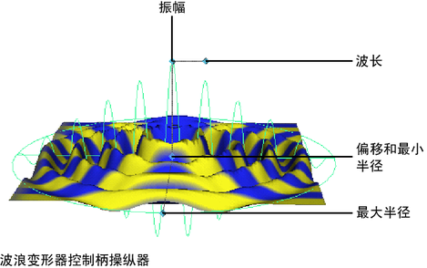

创建波浪变形器之后，其控制柄会显示在场景中，而其节点会在“通道盒”(Channel Box)中列出。这些节点包括波浪控制柄节点（默认名称：wavenHandle）、波浪控制柄形状节点 (wavenHandleShape) 和波浪变形器节点（默认名称：waven）。
通过编辑波浪控制柄节点和波浪变形器节点，可以编辑波浪变形器的效果。可以移动（平移）、旋转和缩放波浪控制柄来编辑变形的效果。也可以编辑波浪变形器节点的可设置关键帧属性（通道），这些属性显示在“通道盒”(Channel Box)中。
通过使用控制柄操纵器编辑波浪变形器
- 选择波浪变形器节点（默认名称：waven）。
- 选择“显示操纵器工具”(Show Manipulator Tool)（默认快捷键：t 键）。
提示： 默认情况下，“偏移”(Offset)和“最小半径”(Min Radius)操纵器都位于控制柄的中心。
- 在场景中，在波浪变形器控制柄上选择操纵器之一。
波浪变形器控制柄上的操纵器允许您编辑属性。
-
 ，以交互方式进行编辑。请注意，“通道盒”(Channel Box)会更新要更改的值。
，以交互方式进行编辑。请注意，“通道盒”(Channel Box)会更新要更改的值。
默认情况下，“偏移”(Offset)和“最小半径”(Min Radius)操纵器都位于控制柄的中心。
通过移动、旋转或缩放控制柄进行编辑
- 选择波浪变形器节点（默认名称：waven 控制柄）。
- 移动（平移）、旋转或缩放控制柄以更改变形的效果。
- 通过按 或 键，移动枢轴点，然后再次按 或 键，可以移动或旋转控制柄枢轴点。
请记住，您可以访问变形器控制柄的局部轴（“显示 > 变换显示 > 局部旋转轴”(Display > Transform Display > Local Rotation Axes)）、旋转和缩放枢轴（“显示 > 变换显示 > 旋转轴”(Display > Transform Display > Rotate Pivots)或“缩放枢轴”(Scale Pivots)）以及选择控制柄（“显示 > 变换显示 > 选择控制柄”(Display > Transform Display > Selection Handle)）。
使用“通道盒”(Channel Box)编辑 waved 变形器
- 选择波浪变形器节点（默认名称：waven）。
选择波浪变形器节点的一种快捷方法是选择变形的对象，然后从“通道盒”(Channel Box)（在“输入”(INPUTS)下）中选择其历史记录中的波浪变形器节点。
请注意，您还可以使用“通道控制”(Channel Control)编辑器（选择窗口 > 常规编辑器 > 通道控制(Window > General Editors > Channel Control)）控制哪些属性将作为可设定关键帧的属性（通道）在“通道盒”(Channel Box)中列出。
- 单击要编辑的通道的名称。
- 在场景中，单击鼠标中键并左右移动鼠标。通过移动鼠标，可以更改选定通道的值。移动鼠标时，请注意按 Ctrl 键可以提供更精细的控制，按 Shift 键可提供精细度较小的控制。
使用“属性编辑器”(Attribute Editor)编辑波浪变形器
- 选择波浪变形器节点（默认名称：waven）。
- 打开“属性编辑器”(Attribute Editor)。
- 编辑属性。
请参见波浪。
删除波浪变形器
- 选择波浪变形器的控制柄。
- 选择“编辑 > 删除”(Edit > Delete)，或者按 Backspace 或 Delete 键。
波浪变形器控制柄、波浪变形器控制柄形状和波浪变形器节点都将被删除。但是，该对象仍然具有作为输入节点的调整节点，因此保留了您可能进行的任何调整。此外，请注意，不会删除构成变形求值的各种输入节点。